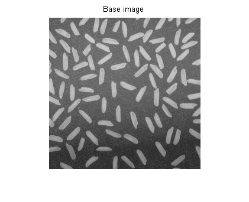
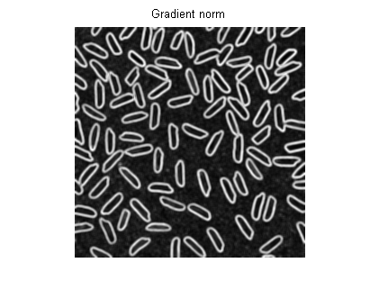
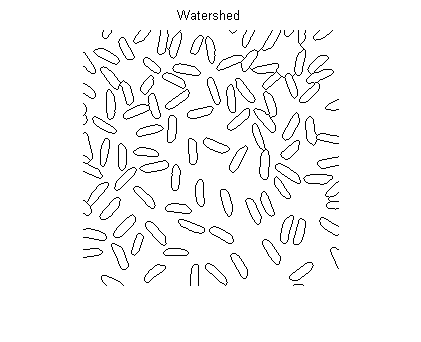
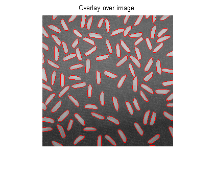

Contents
function demoWatershed(varargin)
%DEMOWATERSHED Segment rice grains from gradient image % % output = demoWatershed(input) % % Example % demoWatershed % % See also % % % ------ % Author: David Legland % e-mail: david.legland@grignon.inra.fr % Created: 2011-07-31, using Matlab 7.9.0.529 (R2009b) % Copyright 2011 INRA - Cepia Software Platform.
Ref image
% Read image img = Image.read('rice.png'); % display image figure; show(img); title('Base image');
Apply some filtering
% gradient image grad = gradient(img); % norm of the gradient gradn = norm(grad); % smooth the gradient norm h = ones(3, 3)/9; gf = filter(gradn, h); % display filtered image figure; show(gf); title('Gradient norm');
Impose minima
% compute watershed, by imposing minima wat = watershed(gf, 'dynamic', 5); % display binary wateshed figure; show(wat>0) title('Watershed'); % Display overlay over base image ovr = overlay(img, wat==0); figure; show(ovr); title('Overlay over image'); 